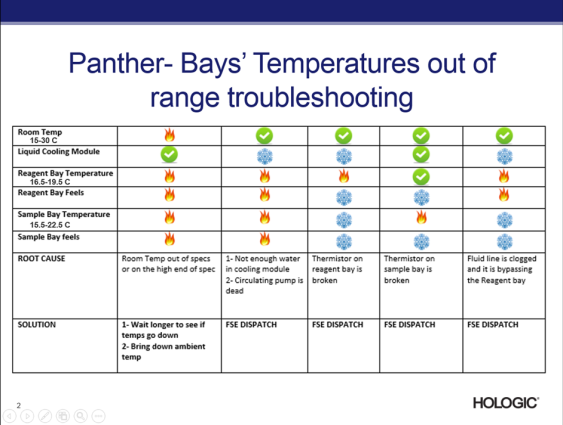

Seebeck Voltage Too Low – Cooling Module Error
This topic covers troubleshooting procedures for low Seebeck voltages numbered 0, 1, 2, and 3. Error codes for these voltages appear in the table below.
Error Codes
| Seebeck Voltage | Dec | Hex |
|---|---|---|
| 0 | 024.000.00050 | 0x18.0x00.0x32 |
| 1 | 024.000.00052 | 0x18.0x00.0x34 |
| 2 | 024.000.00054 | 0x18.0x00.0x36 |
| 3 | 024.000.00056 | 0x18.0x00.0x38 |
Complaint Description
Cooling Module Error, Seebeck voltage too low (%1 C).
Generally caused by a lack of voltage generated during the Seebeck voltage check, such as a broken junction in the Peltier.
Technical Support
Auto Dispatch all Seebeck Voltage Too Low errors as a Severity 2. Troubleshoot error as normal. Inform customers FSE Field Service Engineer. will contact them to schedule service. Customer can continue to process samples if instrument restart is successful.
Field Service Engineer. will contact them to schedule service. Customer can continue to process samples if instrument restart is successful.
Troubleshooting
-
Check lab temperature.
-
Check temperature, and feel temperature of bays.
-
Check cooling module water level.
-
Check for loud noise coming from the right side of the instrument.
-
If cooling module temperature is low – in the single digits – turn instrument off, and await FSE dispatch.
-
This will require FSE dispatch.

Field Service
Laboratory Temperature
Verify the laboratory is within ambient temperature (15 - 30 ˚C).
Resolution
Set laboratory temperature between 15 - 30 ˚C, then allow instrument to warm up or cool down.
Cooling Module Sub-Assembly
From Panther Temperature screen, make sure that both Reagent and Sample bays are within temperature ranges (15.5 - 22.0 ˚C for both bays). Also, check that cooling module temperature does not drop below 3.5 ˚C.
Resolution
Restart instrument and computer. If Reagent or Sample bays do not move within temperature range, dispatch FSE.
Cooling Fan
If cooling fan is defective, replace fan.
Resolution
If cooling fan spins slowly, or does not spin, replace fan.
If cooling fan is not connected, reconnect fan.
Reagent or Sample Bay Out of Temperature
Verify both Reagent and Sample bays are within temperature range (15.5 - 22.0 ˚C for both bays).
Resolution
Reference Event IDs for Reagent and Sample bay troubleshooting.
Not Enough Coolant in Reservoir
Verify the cooling module reservoir is full.
Also, make sure there are no loose fittings, leaks, or kinks.
Resolution
- Add coolant.
- Fix loose fittings, leaks, or kinks.
Cooling Module Pump
Verify the cooling module pump is running.
Resolution
Replace coolant pump.
Cooling Module Thermistor
Note: Cooling module thermistor may be broken, or stuck at high temperature.
- Verify thermistor is connected.
- Check for thermistor broken wire.
Resolution
Replace thermistor.
Peltiers
Note: A good Peltier should feel warm to the touch.
Using Service Software, compare seebeck voltages. All should read about the same, but the one pair that reads close to 0 volts is most likely the culprit.
Use a multimeter set to ohms. Attache plus lead to red Peltier wire, and minus lead to black Peltier wire. A good Peltier displays about negative 1.5 ohms. A bad Peltier displays a reading in the Megaohms range.
Then, place the palm of your hand on the black bracket, to cause resistance reading to indicate more negative. When you remove your palm, multimeter gradually returns to original reading. For a bad Peltier, the resistance reading does not change.
Resolution
Replace Peltiers.
Printed Circuit Board
Check for loose connections.
Check for burnt components or signs of old spills or dry fluid.
Resolution
- Reseat any loose connections.
- Replace printed circuit board.
- If problem persists, replace chiller ramp module.
 button at the top of the page to send feedback, comments, or change requests.
button at the top of the page to send feedback, comments, or change requests.